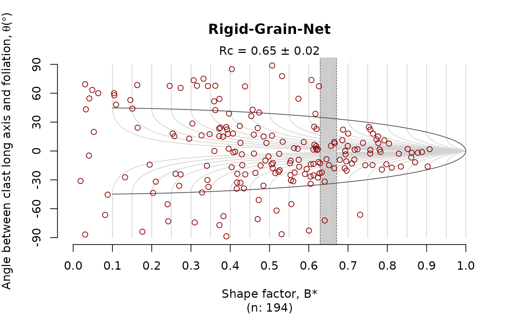

The rigid grain net after (Jessup et al. 2007) plots the distribution the
strain ratio (R) of orientation (phi) of
porphyroclast over the theoretical distribution of tailless clasts. The plot estimates
the critical shape factor Rc marking the transition between the stable-sink
position and infinitely rotating porphyroclasts.
This critical shape factor can be interpreted as the the mean kinmatic vorticity number.
Here the Rc is estimated using the bootstrap method described in Stephan et al. (2025).
Arguments
- r
numeric. The porphyroclast aspect ratio (long axis/short axis)
- theta
numeric. Angle between long axis and foliation (in degrees)
- angle_error
numeric. Uncertainty of angle measurement.
3by default.- boot
integer. Number of bootstrap resamples
- probs
integer. Probability with values in \([0, 1]\) to estimate critical shape factor, i.e. the largest shape factor of measurements outside of critical hyperbole.
- grid
numeric. Spacing of hyperboles.
- ...
plotting arguments passed to
graphics::points()
Value
a plot or a list of the calculated B (shape factor) and theta values,
and the bootstrapped confidence interval of the critical B value (Rc_CI).
References
Jessup, Micah J., Richard D. Law, and Chiara Frassi. "The rigid grain net (RGN): an alternative method for estimating mean kinematic vorticity number (Wm)." Journal of Structural Geology 29.3 (2007): 411-421. doi: 10.1016/j.jsg.2006.11.003
Stephan, Tobias, et al. "Going with the flow—Changes of vorticity control gold enrichment in Archean shear zones (Shebandowan Greenstone Belt, Superior Province, Canada)." Journal of Structural Geology (2025): 105542. doi: 10.1016/j.jsg.2025.105542
Examples
data(ramsay)
set.seed(20250411)
# assuming the mean orientation is the foliation:
theta <- tectonicr::circular_mean(ramsay[, 2]) - ramsay[, 2]
RGN_plot(ramsay[, 'R'], theta, col = "darkred")
#> Warning: NaNs produced
#> Warning: NaNs produced
#> Warning: NaNs produced
#> Warning: NaNs produced
